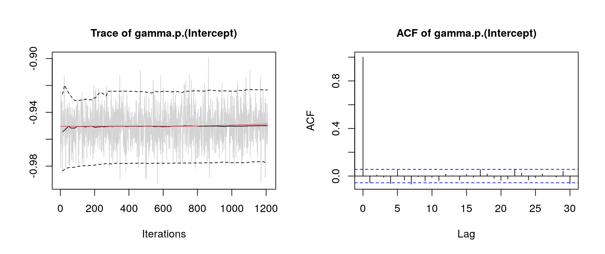

Complex Space-Time Interactions in a Cox Model
cox.RmdIntro
In the article BAMLSS: Bayesian Additive Models for Location, Scale, and Shape (and Beyond) (Umlauf, Klein, and Zeileis 2018) an example based on the article of Taylor (2017) is used to illustrate the BAMLSS framework with complex space-time interactions in a Cox model.
The example uses data from the London Fire Brigade (LFB, http://www.london-fire.gov.uk/), which is one of largest fire brigades in the world. Each year, the LFB is called thousands of times, in most cases due to dwelling fires. To prevent further damage or fatal casualties, a short arrival time is important, i.e., the time it takes until a fire engine arrives at the scene after an emergency call has been received. The aim of this analysis is to explore the drivers of arrival times.
Model
The response times are analyzed within a survival context where the hazard of an event (fire engine arriving) at time \(t\) follows a relative risk model of the form \[ \lambda(t) = \exp\left(\eta(t)\right) = \exp\left( \eta_{\lambda}(t) + \eta_{\gamma} \right), \] i.e., a model for the instantaneous arrival rate conditional on the engine not having arrived before time \(t\). Here, the hazard function is assumed to depend on a time-varying predictor \(\eta_{\lambda}(t)\) and a time-constant predictor \(\eta_{\gamma}\).
We set up a model with the time-constant predictor \[
\eta_{\gamma} = \beta_0 + f_1(\texttt{fsintens}) + f_2(\texttt{daytime}) +
f_3(\texttt{lon}, \texttt{lat}) + f_4(\texttt{daytime}, \texttt{lon}, \texttt{lat}),
\] where \(\beta_0\) is an intercept and function \(f_1( \cdot )\) is the effect of fire station intensity (fsintens, computed with a kernel density estimate of all fire stations in London). The other variables represent: The time of the day (daytime), exact spatial coordinates of the fire (lon and lat). Here function \(f_4( \cdot )\) is a three-dimensional interaction effect.
The time-varying additive predictor has the following form \[
\eta_{\lambda}(\texttt{arrivaltime}) = f_0(\texttt{arrivaltime}) + f_1(\texttt{arrivaltime}, \texttt{lon}, \texttt{lat}),
\] where \(f_0( \cdot )\) is the baseline hazard for variable arrivaltime, the waiting time until the first fire engine arrives after the received emergency call.
which is of prime interest in this analysis.
Data
The data is freely available from the London DataStore (http://data.london.gov.uk/) under the UK Open Government Licence (OGL v2). It can be downloaded from http://data.london.gov.uk/dataset/london-fire-brigade-incident-records which also contains previous years. The preprocessed data is part of the bamlss package and can be loaded with
## coordinates arrivaltime daytime fsintens
## 12279 (-0.09832153, 51.65413) 6.033333 0.1263889 248.6067
## 12280 (-0.04467665, 51.48959) 3.400000 0.3266667 1646.1975
## 12281 (-0.1101969, 51.47268) 4.383333 0.4641667 1333.3776
## 12282 (-0.2448571, 51.45319) 5.800000 1.9297222 300.6900
## 12283 (-0.1874054, 51.48648) 5.133333 1.9308333 1195.7156
## 12284 (-0.2893525, 51.61031) 4.966667 3.5480556 319.6787and is stored as a "SpatialPointsDataFrame". Therefore, the spatial distribution of fires in London along with boundary polygons and station locations can be plotted instantly with:
library("sp")
par(mar = rep(0, 4))
plot(LondonBoundaries)
plot(LondonFire, col = "red", add = TRUE)
plot(LondonBoroughs, add = TRUE)
plot(LondonFStations, col = "blue", add = TRUE, pch = 16)
Estimation
The Cox model is implemented in the cox_bamlss() family and uses a special optimizer function cox_mode() and sampling engine cox_mcmc(). Note that the optimizer and sampler function do not need to be called explicitly within the bamlss() wrapper call, because the cox_bamlss() family specifies this already in its return value, such that internally function bamlss() nows to only use the estimation engines that are supplied by the family.
fam <- cox_bamlss()
names(fam)## [1] "family" "names" "links" "transform" "optimizer" "sampler"
## [7] "predict"There is also an additional transformer function, which is needed for computing the (numerical) integrals that are part of the log-likelihood. Predictions are also based on integrals, therefore the predict() function is also part of this family object and will be used by predict.bamlss() instead of the default methods.
The model formula has two parts, the time-dependent for \(\eta_{\lambda}\) and the time-constant part for \(\eta_{\gamma}\) and can be set up with
f <- list(
Surv(arrivaltime) ~ ti(arrivaltime,k=20) + ti(arrivaltime,lon,lat,d=c(1,2),k=c(5,30)),
gamma ~ s(fsintens) + ti(daytime,bs="cc",k=30) + ti(lon,lat,k=80,d=2) +
ti(daytime,lon,lat,bs=c("cc","cr"),d=c(1,2),k=c(10,30))
)Note that the Surv() function from the survival package (Therneau 2019) is used to set up the formula for \(\eta_{\lambda}\). Also note that the arrival times are not censored in this application. The model is estimated with
## Set the seed for reproducibility.
set.seed(222)
## Start estimation
firemodel <- bamlss(f, data = LondonFire, family = "cox",
subdivisions = 25, maxit = 1000,
n.iter = 6000, burnin = 3000, thin = 20, cores = 8)Note, due to the complexity of the model and model terms estimation takes quite long. On a Linux system with 8 Intel i7-2600 3.40GHz processors estimation takes approximately 1.2 days.
Good practice after fitting the model is to do some convergence checks of the MCMC chains, e.g., by looking at traceplots
plot(firemodel, which = "samples") Note, for convenience we only show the traceplot of the intercept term of predictor \(\eta_{\gamma}\). The traceplot indicates convergence of the MCMC chains and have close to i.i.d. behavior. The model summary gives
summary(firemodel)##
## Call:
## bamlss(formula = f, family = "cox", data = LondonFire, cores = 8,
## subdivisions = 25, maxit = 1000, n.iter = 6000, burnin = 3000,
## thin = 20)
## ---
## Family: cox
## Link function: lambda = log, gamma = log
## *---
## Formula lambda:
## ---
## Surv(arrivaltime) ~ ti(arrivaltime, k = 20) + ti(arrivaltime,
## lon, lat, d = c(1, 2), k = c(5, 30))
## -
## Smooth terms:
## Mean 2.5% 50% 97.5%
## ti(arrivaltime).tau21 2.087e-02 5.443e-03 1.717e-02 5.698e-02
## ti(arrivaltime).edf 1.319e+01 1.061e+01 1.317e+01 1.585e+01
## ti(arrivaltime).alpha 7.017e-01 7.428e-04 8.238e-01 1.000e+00
## ti(arrivaltime,lon,lat).tau21 2.742e-03 3.547e-05 1.731e-04 6.251e-03
## ti(arrivaltime,lon,lat).tau22 1.256e+02 3.188e+01 1.062e+02 3.061e+02
## ti(arrivaltime,lon,lat).edf 1.369e+01 8.909e+00 1.360e+01 1.839e+01
## ti(arrivaltime,lon,lat).alpha 7.107e-01 1.755e-03 8.394e-01 1.000e+00
## parameters
## ti(arrivaltime).tau21 0.117
## ti(arrivaltime).edf 16.853
## ti(arrivaltime).alpha NA
## ti(arrivaltime,lon,lat).tau21 1.442
## ti(arrivaltime,lon,lat).tau22 100.714
## ti(arrivaltime,lon,lat).edf 24.858
## ti(arrivaltime,lon,lat).alpha NA
## ---
## Formula gamma:
## ---
## gamma ~ s(fsintens) + ti(daytime, bs = "cc", k = 30) + ti(lon,
## lat, k = 80, d = 2) + ti(daytime, lon, lat, bs = c("cc",
## "cr"), d = c(1, 2), k = c(10, 30))
## -
## Parametric coefficients:
## Mean 2.5% 50% 97.5% parameters
## (Intercept) -0.9501 -0.9773 -0.9499 -0.9234 -0.941
## alpha 0.9932 0.9398 0.9999 1.0000 NA
## -
## Smooth terms:
## Mean 2.5% 50% 97.5%
## s(fsintens).tau21 9.083e+00 1.746e+00 6.596e+00 2.919e+01
## s(fsintens).edf 7.381e+00 5.954e+00 7.439e+00 8.504e+00
## s(fsintens).alpha 9.048e-01 4.122e-01 9.785e-01 1.000e+00
## ti(daytime).tau21 3.385e-02 1.703e-04 8.700e-04 4.559e-02
## ti(daytime).edf 1.094e+01 6.215e+00 9.916e+00 2.201e+01
## ti(daytime).alpha 9.176e-01 5.090e-01 9.856e-01 1.000e+00
## ti(lon,lat).tau21 4.313e+00 2.161e+00 4.049e+00 7.642e+00
## ti(lon,lat).edf 5.794e+01 4.940e+01 5.806e+01 6.489e+01
## ti(lon,lat).alpha 4.695e-01 1.428e-03 3.702e-01 1.000e+00
## ti(daytime,lon,lat).tau21 3.245e+00 2.595e-01 1.928e+00 1.464e+01
## ti(daytime,lon,lat).tau22 5.289e+00 8.305e-01 3.856e+00 1.770e+01
## ti(daytime,lon,lat).edf 3.846e+01 2.034e+01 3.763e+01 6.181e+01
## ti(daytime,lon,lat).alpha 7.939e-01 1.493e-01 9.154e-01 1.000e+00
## parameters
## s(fsintens).tau21 8.171
## s(fsintens).edf 7.638
## s(fsintens).alpha NA
## ti(daytime).tau21 0.000
## ti(daytime).edf 6.461
## ti(daytime).alpha NA
## ti(lon,lat).tau21 7.714
## ti(lon,lat).edf 65.221
## ti(lon,lat).alpha NA
## ti(daytime,lon,lat).tau21 0.000
## ti(daytime,lon,lat).tau22 0.000
## ti(daytime,lon,lat).edf 0.013
## ti(daytime,lon,lat).alpha NA
## ---
## Sampler summary:
## -
## DIC = 22636.5 logLik = -11247.03 logPost = -10031.52
## pd = 142.4373
## ---
## Optimizer summary:
## -
## AICc = 22607.29 converged = 1 edf = 122.0436
## logLik = -11178.97 logPost = -8898.27 time = 14443.76and indicates that the three-dimensional effects in lambda and gamma have an effect on the response times. The estimated effects can be plotted with
 The upper left plot shows the estimated baseline hazard effect. The upper right plot the time-constant effect of fire station intensity. The lower left plot the estimated effect of the time of the day and the lower right plot the estimated time-constant spatial effect.
The upper left plot shows the estimated baseline hazard effect. The upper right plot the time-constant effect of fire station intensity. The lower left plot the estimated effect of the time of the day and the lower right plot the estimated time-constant spatial effect.
Prediction
Predictions in for an estimated Cox model are based on the custom predict function cox_predict(). Here, predicted probabilities are based on numerical integration, therefore, the user can specify the subdivisions that are used in the integration routine. For example, let’s pick a sample location within the boundaries of London and predict the corresponding probability that the fire engine arrives at 15pm within 0 to 20 minutes.
## Extract the 150th sample.
i <- 150
## Create a new data frame for prediction.
nd <- data.frame(
"arrivaltime" = seq(0, 20, length = 100),
"daytime" = 15
)
nd$fsintens <- LondonFire$fsintens[i]
nd$lon <- LondonFire$lon[i]
nd$lat <- LondonFire$lat[i]
## Predict probabilities.
nd$p <- 1 - t(predict(firemodel, newdata = nd,
type = "probabilities", subdivisions = 100, FUN = c95))The estimated probabilities that the fire engine arrives in \(t\) minutes can then be plotted with

References
Taylor, Benjamin M. 2017. “Spatial Modelling of Emergency Service Response Times.” Journal of the Royal Statistical Society A. doi:10.1111/rssa.12192.
Therneau, T. M. 2019. survival: A Package for Survival Analysis in S. https://CRAN.R-project.org/package=survival.
Umlauf, Nikolaus, Nadja Klein, and Achim Zeileis. 2018. “BAMLSS: Bayesian Additive Models for Location, Scale and Shape (and Beyond).” Journal of Computational and Graphical Statistics 27 (3): 612–27. doi:10.1080/10618600.2017.1407325.
Umlauf, Nikolaus, Nadja Klein, Achim Zeileis, and Thorsten Simon. 2019. bamlss: Bayesian Additive Models for Location Scale and Shape (and Beyond). https://CRAN.R-project.org/package=bamlss.